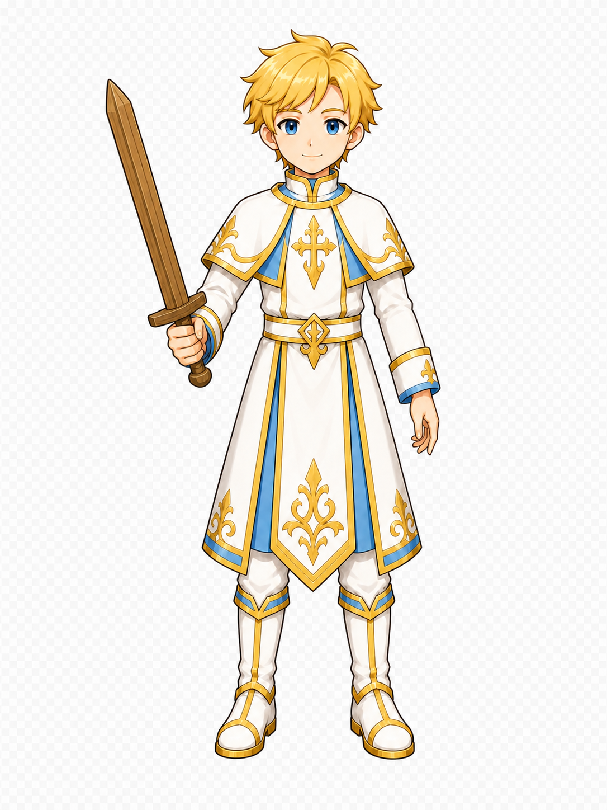
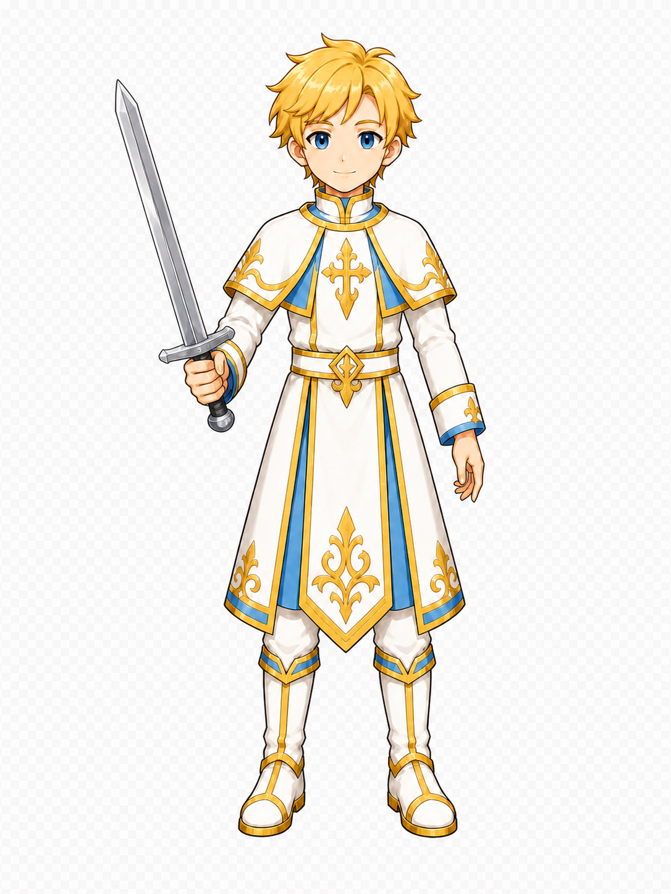
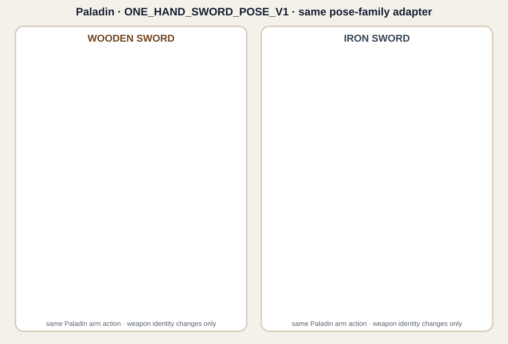
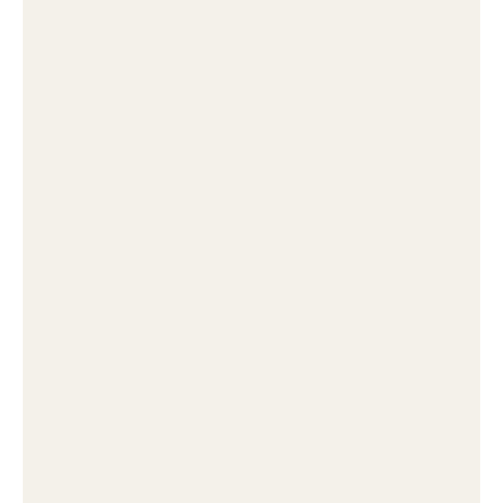
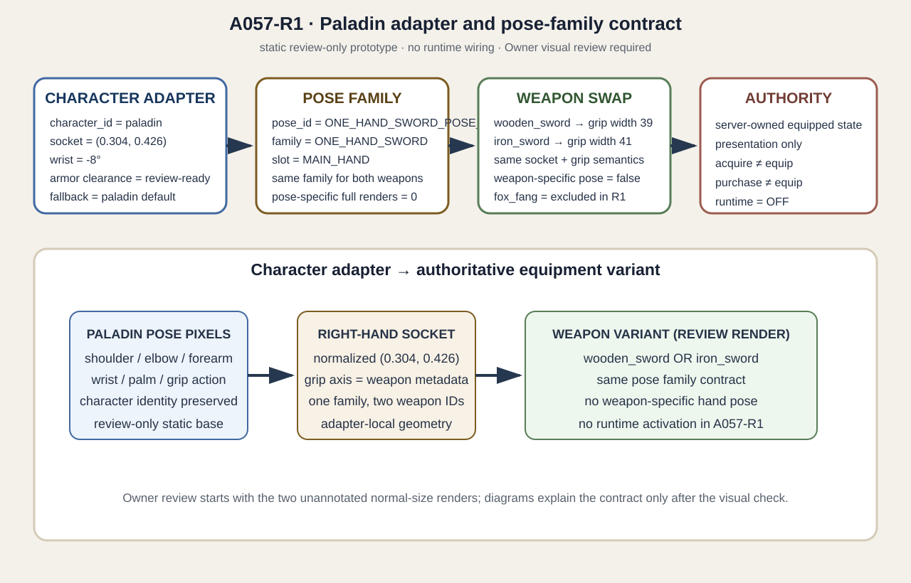

A057-R1 · Paladin ONE_HAND_SWORD_POSE_V1
Second-character validation prototype · wooden_sword + iron_sword · static review only.
Review boundary: This candidate is not runtime-integrated. The server-owned equipment contract, app.py, combat authority, and canonical registry are unchanged. Owner visual acceptance is still required.
1. Normal-size unannotated review — start here


Characterpaladin
Pose familyONE_HAND_SWORD_POSE_V1
Weapon-specific full poseNO — one adapter, two variants
2. Same-pose weapon swap

3. Grip / wrist / armor close-ups

4. Adapter and contract explanation

Static prototype QA summary
Both weapon variants are rendered from the same pose-family intent: the right shoulder, elbow, forearm, wrist, palm, fingers, and thumb form one coherent action. The images are evidence exports, not canonical runtime assets. Fox Fang is explicitly outside this prototype.
GripPASS_REVIEW_READY
Armor clearancePASS_REVIEW_READY
Owner gateNOT_GRANTED